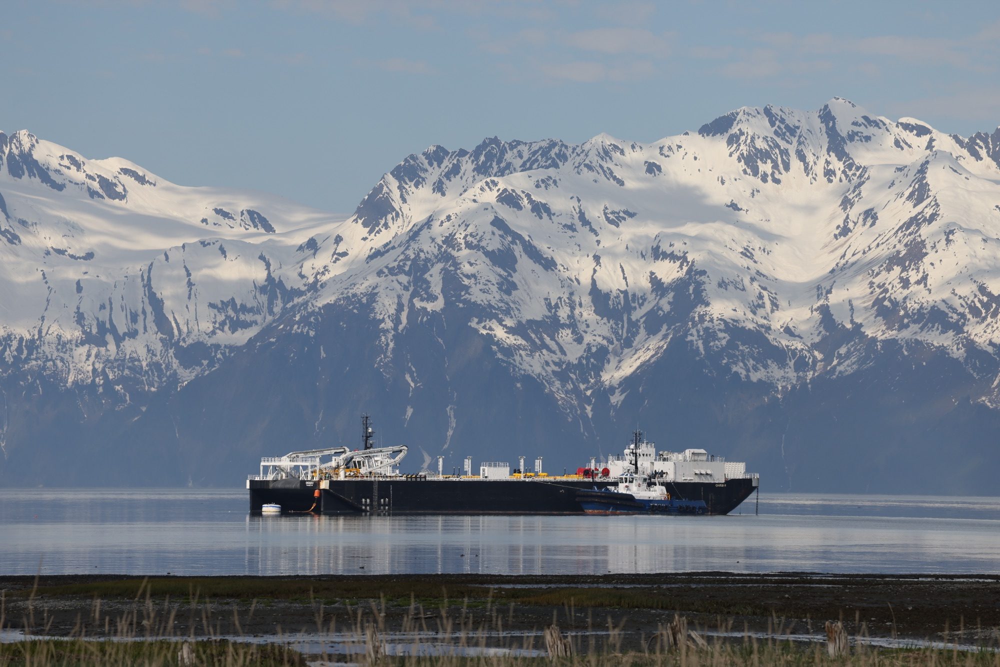
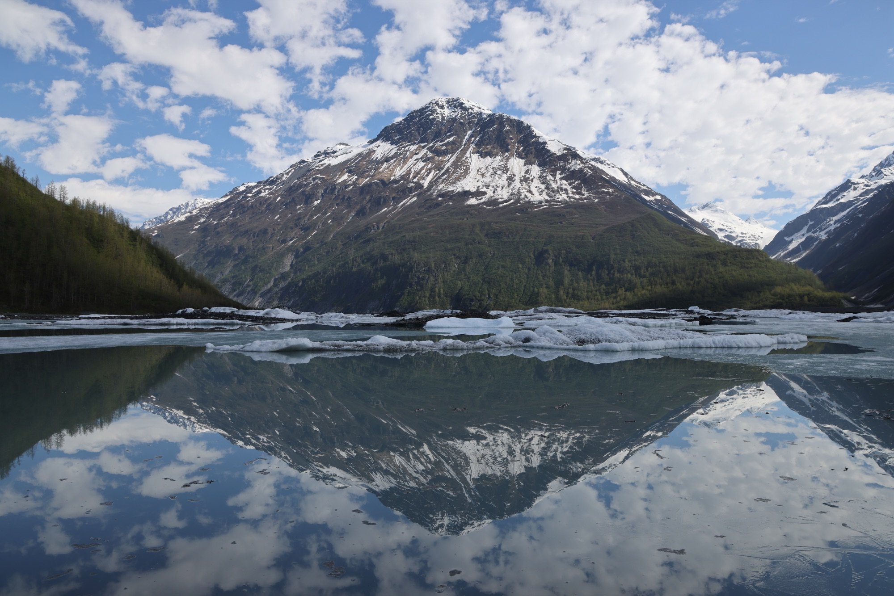

PRINCE WILLIAM SOUND
Valdez
Valdez pairs a working harbor with a dramatic mountain-and-water setting. From town, the surrounding Prince William Sound opens onto a landscape of deep fjords and tidewater ice; this view captures Columbia Glacier on the water beyond.